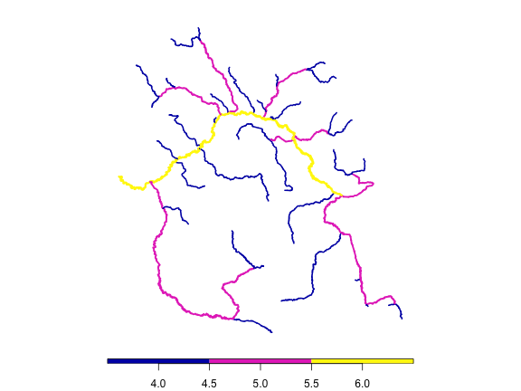

This vignette demonstrates fresh on a real watershed
analysis task: extracting the stream network upstream of the Neexdzii
Kwa (Upper Bulkley River) / Wedzin Kwa confluence — the same scoping
used in the restoration_wedzin_kwa_2024
land cover change analysis.
Snap the confluence
Start by snapping a point near the Neexdzii Kwa / Wedzin Kwa confluence to the FWA stream network.
library(fresh)
library(sf)
#> Linking to GEOS 3.13.0, GDAL 3.8.5, PROJ 9.5.1; sf_use_s2() is TRUE
mouth <- frs_point_snap(x = -126.18, y = 54.39)
mouth[, c("gnis_name", "blue_line_key", "downstream_route_measure", "distance_to_stream")]
#> Simple feature collection with 1 feature and 4 fields
#> Geometry type: POINT
#> Dimension: XY
#> Bounding box: xmin: 988463 ymin: 1043062 xmax: 988463 ymax: 1043062
#> Projected CRS: NAD83 / BC Albers
#> gnis_name blue_line_key downstream_route_measure distance_to_stream
#> 1 <NA> 360312275 2137.031 154.857
#> geom
#> 1 POINT (988463 1043062)In the real analysis, we use the known Bulkley mainstem position
directly (blue_line_key = 360873822, downstream_route_measure =
166030.4) — the same values used in
lulc_network-extract.R.
Extract upstream network
Get all stream segments upstream of the confluence, filtered to order 4+ — streams large enough to have floodplains.
# Known Neexdzii Kwa / Wedzin Kwa confluence on Bulkley mainstem
blk <- 360873822
drm <- 166030.4
upstream <- frs_network_prune(
blue_line_key = blk,
downstream_route_measure = drm,
stream_order_min = 4,
watershed_group_code = "BULK"
)
nrow(upstream)
#> [1] 1219
sort(unique(upstream$stream_order))
#> [1] 4 5 6
plot(
upstream["stream_order"],
main = "",
key.pos = 1,
key.width = lcm(1.3),
lwd = upstream$stream_order / 2
)
The network contains 1219 segments across orders 4, 5, 6. Named streams: Ailport Creek, Aitken Creek, Barren Creek, Buck Creek, Bulkley River, Byman Creek, Cesford Creek, Crow Creek, Dungate Creek, Foxy Creek, Johnny David Creek, Klo Creek, Maxan Creek, McKilligan Creek, McQuarrie Creek, North Ailport Creek, Perow Creek, Raspberry Creek, Redtop Creek, Richfield Creek, Robert Hatch Creek.
Fish observations
Query chinook observations in the Bulkley. The cols
parameter keeps the result lean — we only need species, date, life
stage, and location.
chin_obs <- frs_fish_obs(
species_code = "CH",
watershed_group_code = "BULK",
cols = c("fish_observation_point_id", "species_code",
"observation_date", "life_stage", "geom"),
limit = 100
)
nrow(chin_obs)
#> [1] 68
table(chin_obs$life_stage)
#>
#> Fry Juvenile Parr
#> 3 1 2Custom table and columns
All functions accept table and cols
parameters so you can target any schema/view and select only the columns
you need. For example, to query the bcfishpass habitat model with
specific columns:
habitat <- frs_fish_habitat(
watershed_group_code = "BULK",
cols = c("blue_line_key", "gnis_name", "stream_order",
"channel_width", "gradient", "geom"),
limit = 20
)
names(habitat)
#> [1] "blue_line_key" "gnis_name" "stream_order" "channel_width"
#> [5] "gradient" "geom"
summary(habitat$channel_width)
#> Min. 1st Qu. Median Mean 3rd Qu. Max. NA's
#> 0.660 1.280 1.660 7.257 4.140 47.990 11Compare with raw SQL
Without fresh, the upstream network query requires ~20
lines of SQL: a CTE to look up the reference segment’s ltree codes, a
cross join against the full stream table, and an
fwa_upstream() boolean filter. See
restoration_wedzin_kwa_2024/scripts/lulc_network-extract.R
for the raw version. frs_network_prune() wraps this in one
function call.
Summary
| Step | Function | What it does |
|---|---|---|
| Snap | frs_point_snap() |
Index a point to the nearest stream |
| Fetch |
frs_stream_fetch(), frs_lake_fetch(),
frs_wetland_fetch()
|
Retrieve FWA features |
| Traverse |
frs_network_upstream(),
frs_network_downstream()
|
Walk the network |
| Prune |
frs_network_prune(),
frs_order_filter()
|
Filter by order, gradient |
| Fish |
frs_fish_obs(), frs_fish_habitat()
|
Observations and habitat model |
All functions accept table and cols
parameters — swap the source table or select only the columns you
need.